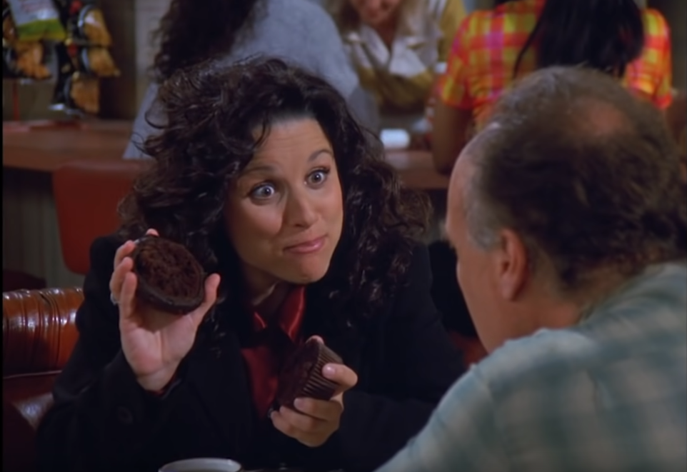

I know what you thought. They don't have homes, they don't have jobs, what do they need the top of a muffin for?
They're lucky to get the stumps.
A muffin is an individually portioned baked product, however the term can refer to one of two distinct items: a part-raised flatbread (like a crumpet) that is baked and then cooked on a griddle (typically unsweetened), or a (often sweetened) quickbread that is chemically leavened and then baked in a mold. While quickbread "American" muffins are often sweetened, there are savory varieties made with ingredients such as corn and cheese, and less sweet varieties like traditional bran muffins. The flatbread "English" variety is of British or other European derivation, and dates from at least the early 18th century, while the quickbread originated in North America during the 19th century. Both types are common worldwide today.